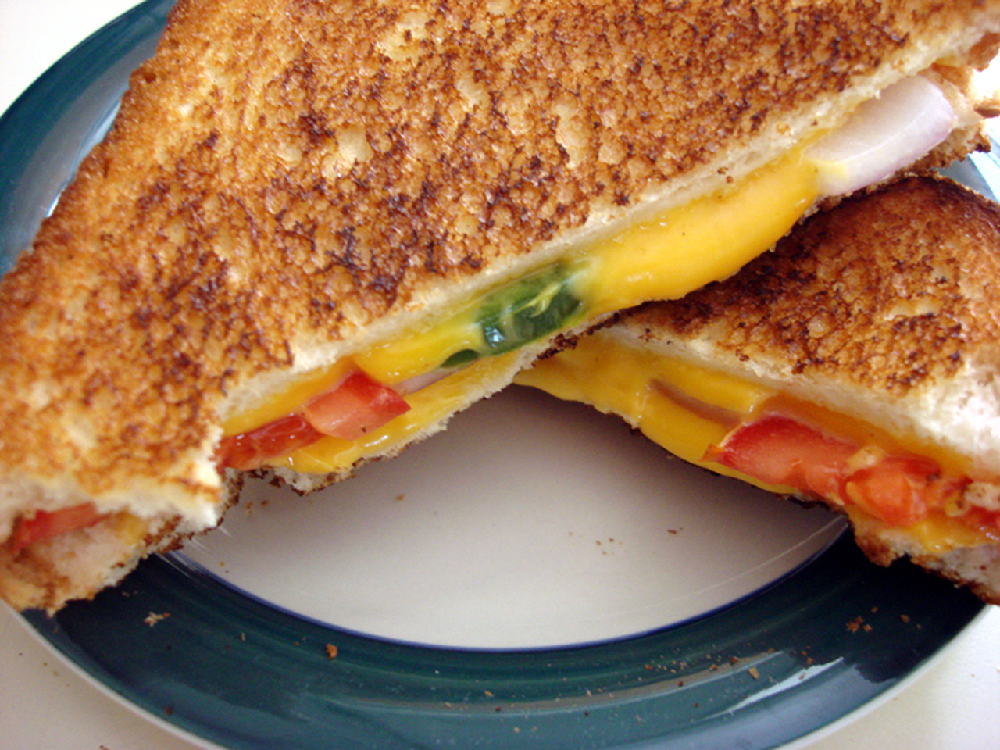

Spicy Grilled Cheese Sandwich

Description
Grilled cheese is divine, but a spicy grill cheese is satisfyingly exotic. The prep time is 2 minutes, cook time is 3 minutes, so in total this should take 5 minutes to cook. This recipe will craft two servings, i.e. 2 sandwiches.
Ingredients
- 2 tablespoons butter or margarine
- 4 slices whit bread
- 2 slices American cheese
- 1 roma (plum) tomato, thinly sliced
- .25 small onion, chopped
- 1 jalapeno pepper, chopped
Steps
- heat a large skillet over low heat.
- spread butter or margarine onto one side of two slices of bread.
- Place both pieces buttered side down in the skillet.
- Lay a slice of cheese on each one, and top with slices of tomato, onion, and jalapeno.
- Butter one side of the remaining slices of bread, and place on top buttered side up.
- When the bottom of the sandwiches are toasted, flip and fry until brown on the other side.
- Enjoy! :)